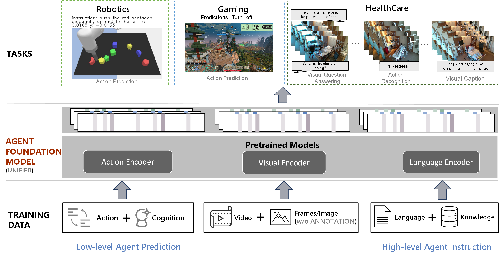

Bidipta Sarkar
Publications
LOB-Bench: Benchmarking Generative AI for Finance – an Application to Limit Order Book Data
Training Language Models for Social Deduction with Multi-Agent Reinforcement Learning
Physically Grounded Vision-Language Models for Robotic Manipulation

Diverse Conventions for Human-AI Collaboration

An Extensible, Data-Oriented Architecture for High-Performance, Many-World Simulation
Brennan Shacklett, Luc Guy Rosenzweig, Zhiqiang Xie, Bidipta Sarkar, Andrew Szot, Erik Wijmans, Vladlen Koltun, Dhruv Batra, Kayvon Fatahalian
Transactions on Graphics 2023
Paper / Website / RL Environments / Blog / Colab


Workshop Papers
An Interactive Agent Foundation Model
Zane Durante*, Bidipta Sarkar*, Ran Gong*, Rohan Taori, Yusuke Noda, Paul Tang, Ehsan Adeli, Shrinidhi Kowshika Lakshmikanth, Kevin Schulman, Arnold Milstein, Demetri Terzopoulos, Ade Famoti, Noboru Kuno, Ashley Llorens, Hoi Vo, Katsu Ikeuchi, Li Fei-Fei, Jianfeng Gao, Naoki Wake*, Qiuyuan Huang*
Proceedings of the Computer Vision and Pattern Recognition Conference (CVPR) Workshops, June 2025
